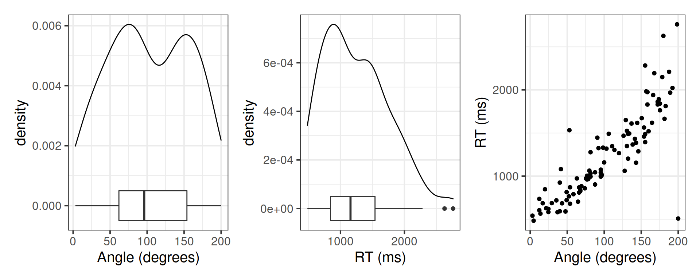
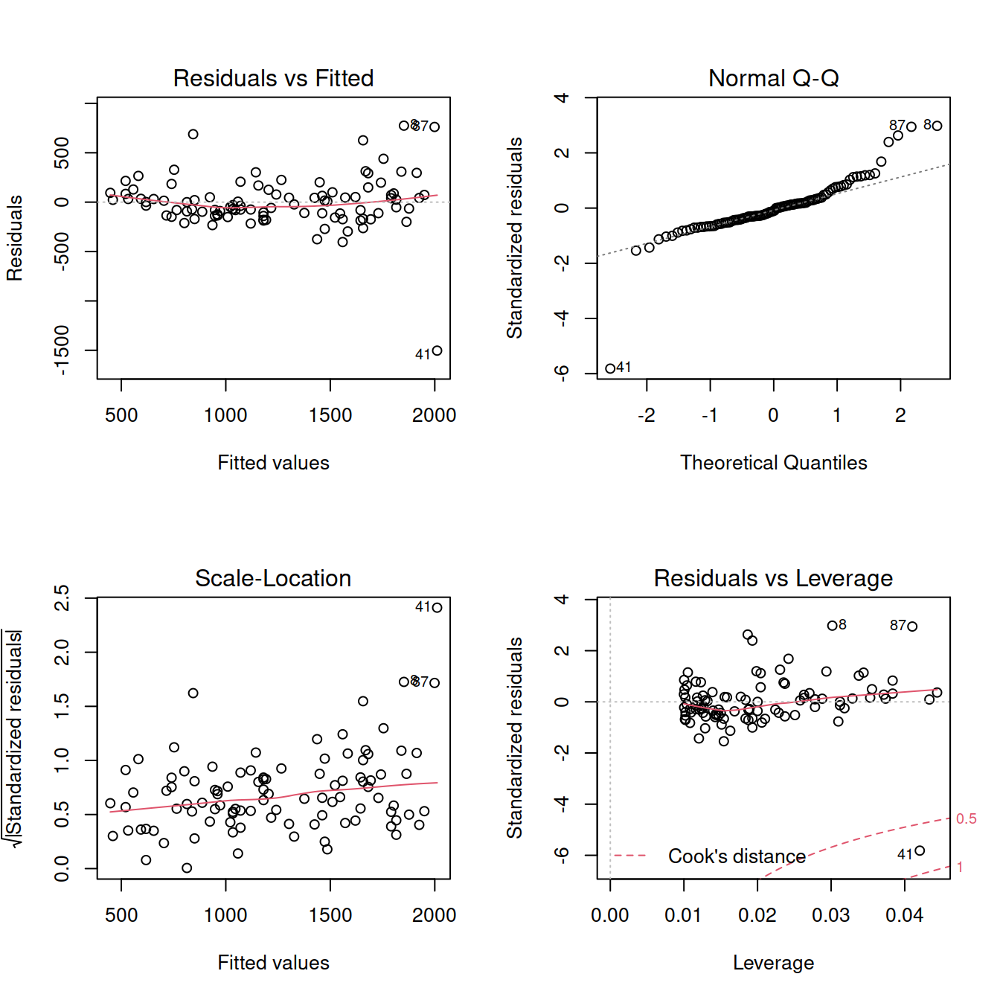
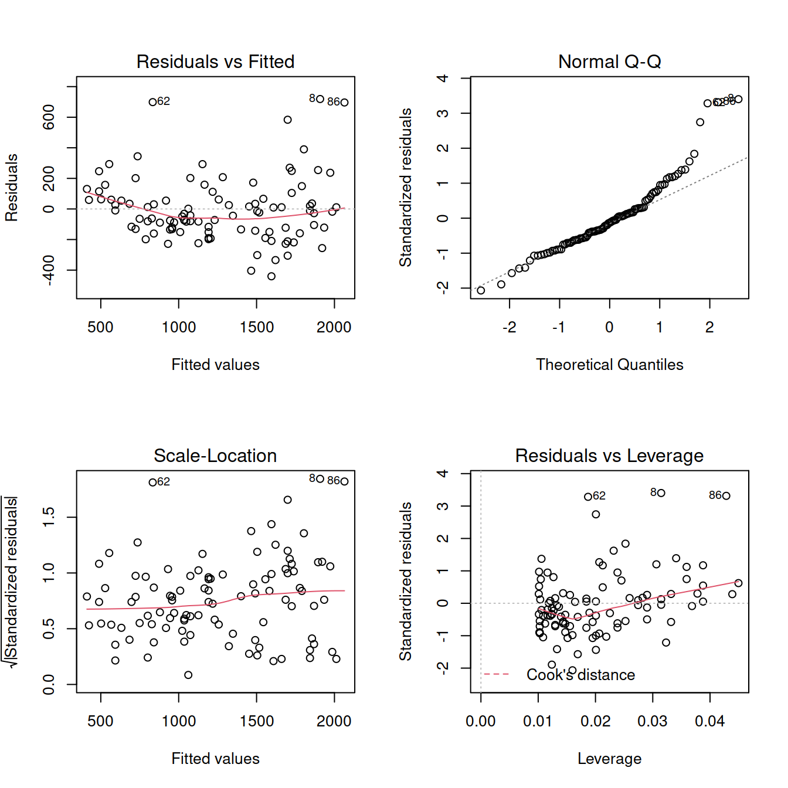
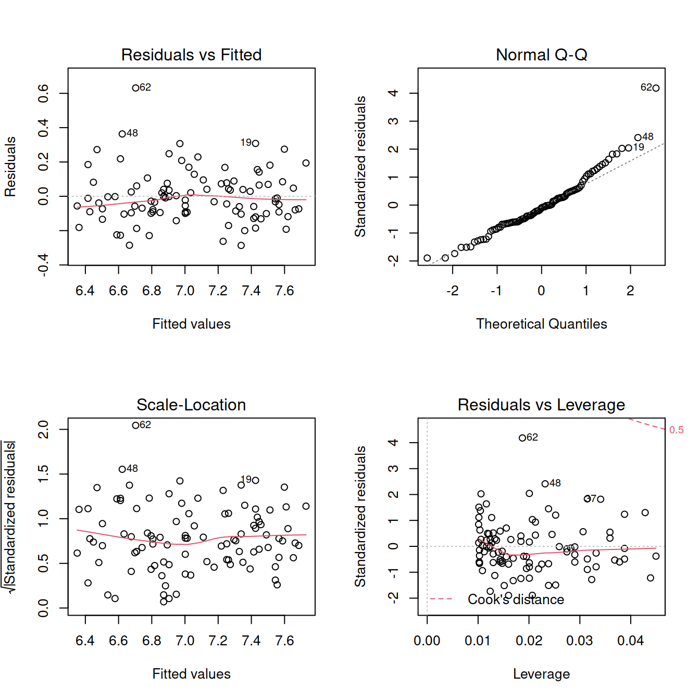
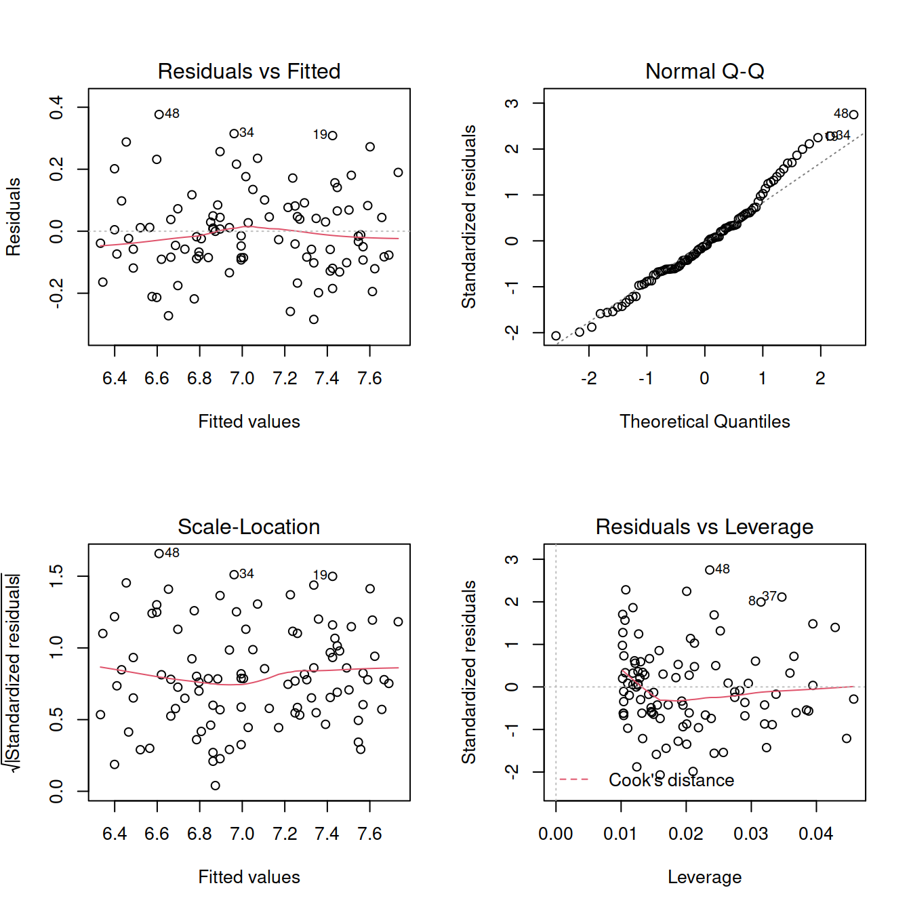
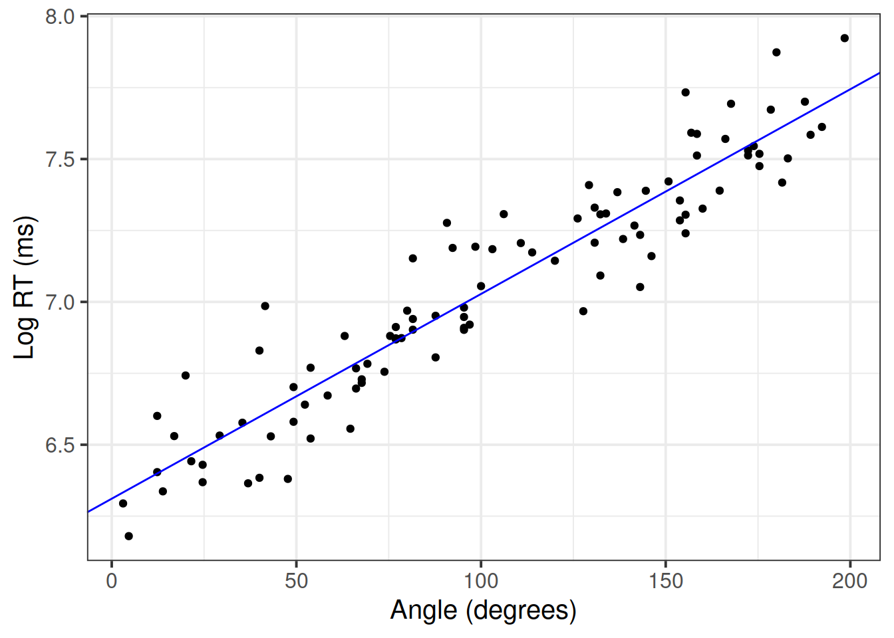

Be sure to check the solutions to last week’s exercises.
You can still ask any questions about previous weeks’ materials if things aren’t clear!
LEARNING OBJECTIVES
A group of researchers is interested in the relationship between the reaction time taken by people to identify whether two 3D images display the same object or not, and the rotation angle at which one of the two objects is presented.
Consider the following data containing the reaction times (in milliseconds) it took a sample of 100 people to identify whether two 3D objects were the same or not, for different rotation angles between 0 and 200 degrees.
IMPORTANT
In today’s lab the analysis is provided, and the task for you will be to correctly report what has been done and why.
Read the data into R:
library(tidyverse)
library(car)
mr <- read_csv(file = 'https://uoepsy.github.io/data/mental_rotation.csv')
head(mr)## # A tibble: 6 x 2
## angle_degrees rt_ms
## <dbl> <dbl>
## 1 69.2 883.
## 2 3.08 542.
## 3 165. 1619.
## 4 154. 1459.
## 5 63.1 973.
## 6 21.5 628.Rename variables:
mr <- mr %>%
rename(
angle = angle_degrees,
rt = rt_ms
)
head(mr)## # A tibble: 6 x 2
## angle rt
## <dbl> <dbl>
## 1 69.2 883.
## 2 3.08 542.
## 3 165. 1619.
## 4 154. 1459.
## 5 63.1 973.
## 6 21.5 628.TIP
The patchwork library is used to combine ggplots into a single figure made up of multiple panels. You can add individual ggplots using + or |, and put plots underneath with the / operator.
Investigate the marginal distribution of each variable and the relationship between the two variables.
library(patchwork)
plt_angle <- ggplot(mr, aes(x = angle)) +
geom_density() +
geom_boxplot(width = 0.001) +
labs(x = 'Angle (degrees)')
plt_rt <- ggplot(mr, aes(x = rt)) +
geom_density() +
geom_boxplot(width = 0.0001) +
labs(x = 'RT (ms)')
plt_joint <- ggplot(mr, aes(x = angle, y = rt)) +
geom_point() +
labs(x = 'Angle (degrees)', y = 'RT (ms)')
plt_angle | plt_rt | plt_joint
mr %>%
summarise(M_angle = mean(angle),
SD_angle = sd(angle),
MED_angle = median(angle),
IQR_angle = IQR(angle),
M_rt = mean(rt),
SD_rt = sd(rt),
MED_rt = median(rt),
IQR_rt = IQR(rt))## # A tibble: 1 x 8
## M_angle SD_angle MED_angle IQR_angle M_rt SD_rt MED_rt IQR_rt
## <dbl> <dbl> <dbl> <dbl> <dbl> <dbl> <dbl> <dbl>
## 1 103. 54.3 96.2 91.9 1243. 505. 1157. 695.Correlation between the variables:
cor(mr)## angle rt
## angle 1.0000000 0.8540206
## rt 0.8540206 1.0000000Linear model:
mdl1 <- lm(rt ~ 1 + angle, data = mr)
summary(mdl1)##
## Call:
## lm(formula = rt ~ 1 + angle, data = mr)
##
## Residuals:
## Min 1Q Median 3Q Max
## -1503.24 -126.76 -26.26 84.89 774.49
##
## Coefficients:
## Estimate Std. Error t value Pr(>|t|)
## (Intercept) 422.9043 56.9626 7.424 4.2e-11 ***
## angle 7.9417 0.4887 16.251 < 2e-16 ***
## ---
## Signif. codes: 0 '***' 0.001 '**' 0.01 '*' 0.05 '.' 0.1 ' ' 1
##
## Residual standard error: 264 on 98 degrees of freedom
## Multiple R-squared: 0.7294, Adjusted R-squared: 0.7266
## F-statistic: 264.1 on 1 and 98 DF, p-value: < 2.2e-16TIP
When you call plot() on a fitted model to show the diagnostic plots, you can display all four plots at once by telling R:
par(mfrow = c(2,2))This means that each figure should be made of 2 by 2 plots, filled row-wise. The first plot will appear in panel (1,1), the second plot in panel (1,2), the third in panel (2,1) and the last in panel (2,2).
To go back to one figure made of a single plot, you type:
par(mfrow = c(1,1))IMPORTANT
par(mfrow = ...) will not work with ggplot.
Diagnostics:
par(mfrow = c(2,2))
plot(mdl1)
im <- influence.measures(mdl1)
summary(im)## Potentially influential observations of
## lm(formula = rt ~ 1 + angle, data = mr) :
##
## dfb.1_ dfb.angl dffit cov.r cook.d hat
## 2 0.08 -0.07 0.08 1.07_* 0.00 0.04
## 8 -0.25 0.45 0.55_* 0.87_* 0.14 0.03
## 19 -0.10 0.24 0.34 0.92_* 0.06 0.02
## 41 0.82 -1.31_* -1.50_* 0.46_* 0.74_* 0.04
## 52 0.02 -0.02 0.02 1.07_* 0.00 0.04
## 63 0.35 -0.26 0.37 0.90_* 0.07 0.02
## 87 -0.34 0.55 0.63_* 0.88_* 0.19 0.04For now, we will focus on Cook’s distance only:
mr <- mr[-41, ]Re-fit the model using the new dataset and check the assumptions:
mdl2 <- lm(rt ~ 1 + angle, data = mr)
summary(mdl2)##
## Call:
## lm(formula = rt ~ 1 + angle, data = mr)
##
## Residuals:
## Min 1Q Median 3Q Max
## -440.29 -132.78 -27.69 64.74 718.91
##
## Coefficients:
## Estimate Std. Error t value Pr(>|t|)
## (Intercept) 384.897 46.632 8.254 7.72e-13 ***
## angle 8.462 0.404 20.942 < 2e-16 ***
## ---
## Signif. codes: 0 '***' 0.001 '**' 0.01 '*' 0.05 '.' 0.1 ' ' 1
##
## Residual standard error: 214.7 on 97 degrees of freedom
## Multiple R-squared: 0.8189, Adjusted R-squared: 0.817
## F-statistic: 438.6 on 1 and 97 DF, p-value: < 2.2e-16par(mfrow = c(2,2))
plot(mdl2)
ncvTest(mdl2)## Non-constant Variance Score Test
## Variance formula: ~ fitted.values
## Chisquare = 11.15201, Df = 1, p = 0.00083941Try transforming the response:
mr <- mr %>%
mutate(log_rt = log(rt))Fit a linear model using the transformed response:
mdl3 <- lm(log_rt ~ 1 + angle, data = mr)
summary(mdl3)##
## Call:
## lm(formula = log_rt ~ 1 + angle, data = mr)
##
## Residuals:
## Min 1Q Median 3Q Max
## -0.28639 -0.09377 -0.01471 0.07431 0.63128
##
## Coefficients:
## Estimate Std. Error t value Pr(>|t|)
## (Intercept) 6.3291728 0.0330909 191.3 <2e-16 ***
## angle 0.0070543 0.0002867 24.6 <2e-16 ***
## ---
## Signif. codes: 0 '***' 0.001 '**' 0.01 '*' 0.05 '.' 0.1 ' ' 1
##
## Residual standard error: 0.1524 on 97 degrees of freedom
## Multiple R-squared: 0.8619, Adjusted R-squared: 0.8605
## F-statistic: 605.3 on 1 and 97 DF, p-value: < 2.2e-16par(mfrow = c(2,2))
plot(mdl3)
shapiro.test(mdl3$residuals)##
## Shapiro-Wilk normality test
##
## data: mdl3$residuals
## W = 0.95174, p-value = 0.001159Try removing the outlier from the dataset:
mr <- mr[-62, ]Re-fit the model and check assumptions:
mdl4 <- lm(log_rt ~ 1 + angle, data = mr)
summary(mdl4)##
## Call:
## lm(formula = log_rt ~ 1 + angle, data = mr)
##
## Residuals:
## Min 1Q Median 3Q Max
## -0.28447 -0.08552 -0.01535 0.07567 0.37662
##
## Coefficients:
## Estimate Std. Error t value Pr(>|t|)
## (Intercept) 6.3111856 0.0303685 207.82 <2e-16 ***
## angle 0.0071666 0.0002621 27.34 <2e-16 ***
## ---
## Signif. codes: 0 '***' 0.001 '**' 0.01 '*' 0.05 '.' 0.1 ' ' 1
##
## Residual standard error: 0.1387 on 96 degrees of freedom
## Multiple R-squared: 0.8862, Adjusted R-squared: 0.885
## F-statistic: 747.8 on 1 and 96 DF, p-value: < 2.2e-16par(mfrow = c(2,2))
plot(mdl4)
shapiro.test(mdl4$residuals)##
## Shapiro-Wilk normality test
##
## data: mdl4$residuals
## W = 0.97986, p-value = 0.138ncvTest(mdl4)## Non-constant Variance Score Test
## Variance formula: ~ fitted.values
## Chisquare = 0.2260013, Df = 1, p = 0.6345Go back to figures with only one plot:
par(mfrow = c(1,1))Create a table for reporting the results:
library(sjPlot)
tab_model(mdl4)| log rt | |||
|---|---|---|---|
| Predictors | Estimates | CI | p |
| (Intercept) | 6.31 | 6.25 – 6.37 | <0.001 |
| angle | 0.01 | 0.01 – 0.01 | <0.001 |
| Observations | 98 | ||
| R2 / R2 adjusted | 0.886 / 0.885 | ||
Plot the final model:
betas <- coef(mdl4)
ggplot(mr, aes(x = angle, y = log_rt)) +
geom_point() +
geom_abline(intercept = betas[1], slope = betas[2], color = 'blue') +
labs(x = 'Angle (degrees)', y = 'Log RT (ms)')
A good data analysis report should follow three steps: Think, Show, and Tell.
For a detailed explanation of each step, check this document.
What do you know? What do you hope to learn? What did you learn during the exploratory analysis?
Describe the study design, the data collection strategy, etc.
Show the mechanics and visualisations which will support your conclusions
Present and describe the model or test which you deemed best to answer your question.
Are the assumptions and conditions of your final test or model satisfied? For the final model (the one you report results from), were all assumptions met? (Hopefully yes, or there is more work to do…). Include evidence (tests or plots).
tab_model() from the sjPlot package).
Communicate your findings
If you followed the steps above, it is just a matter of taking all answers to the above questions and combining them, in order to have a reasonable draft of a statistical report.